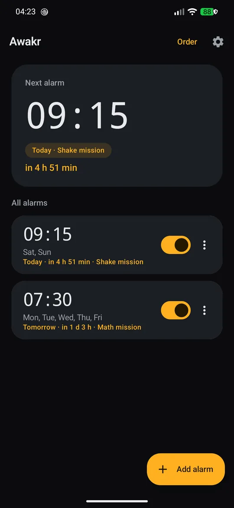
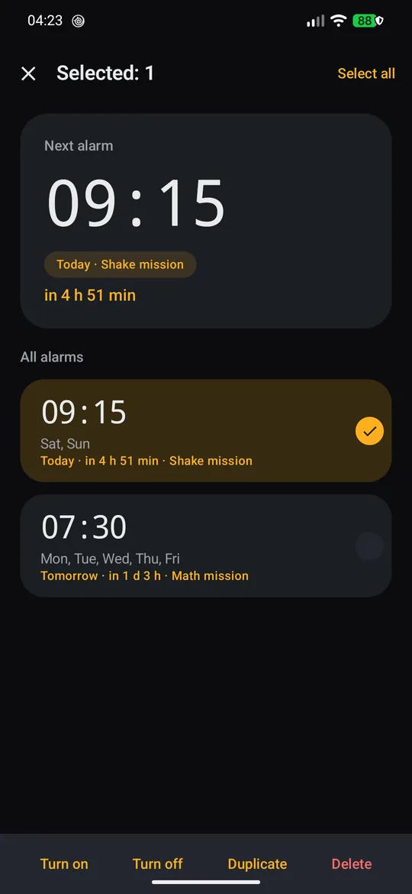
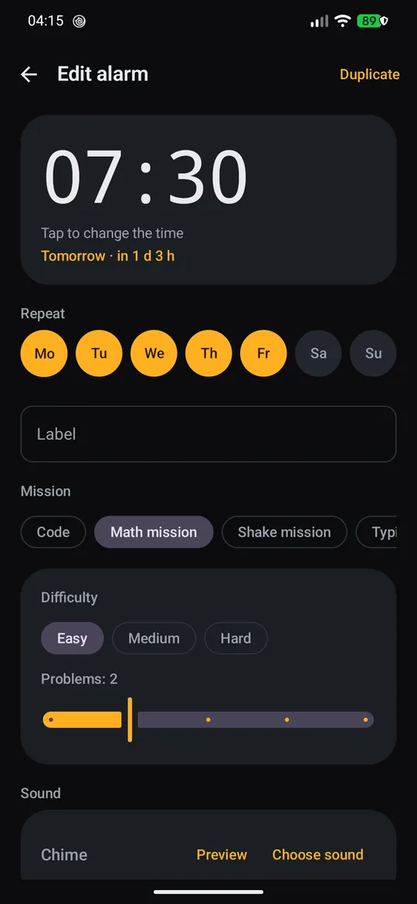
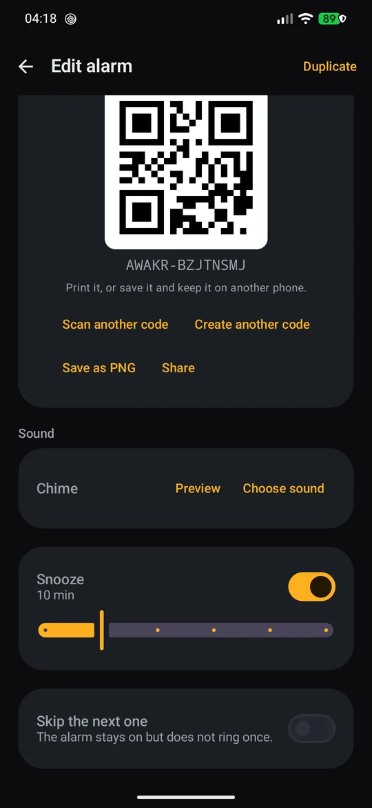
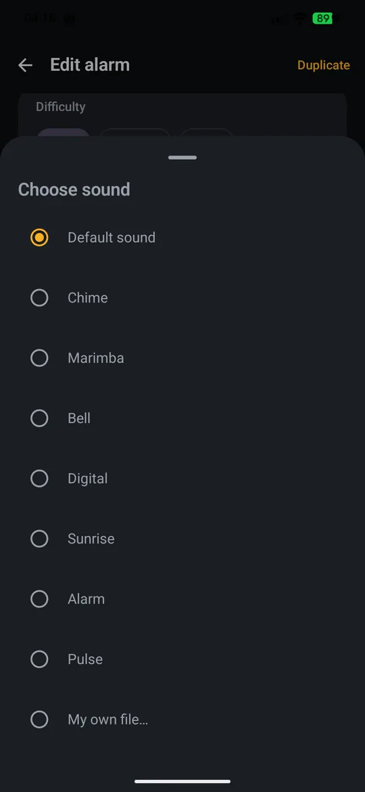
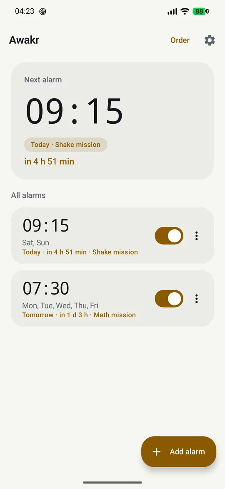

Wake up.
For real.
Awakr is an alarm clock that refuses to be dismissed half asleep: solve a mission, scan a code from a cereal box, shake the phone or type a phrase. Your sounds, your design, no account, no tracking.

Everything an alarm should do, nothing an alarm app usually does
No banner, no interstitial, no subscription screen, and no network stack to phone home with.
No INTERNET permission
The app literally cannot connect anywhere. CI fails the build if INTERNET appears in the merged manifest.
Missions are plugins
Math, code scanning, shake and typing are separate Gradle modules behind one MissionPlugin interface. New mission = one small PR.
Actually reliable
Alarm-clock API, exact scheduling, rescheduling after reboot, app update and timezone change, full-screen ring screen over the lock screen.
Your own music
Seven built-in tones, or pick any audio file from storage — it is copied into the app, so it still plays if you delete the original.
Both themes
Dark by default, light on request, or follow the system. Amber-on-charcoal, motion and typography straight from Material 3.
Made for sleepy hands
Long-press selects several alarms at once, configurable swipe action, reorder mode with drag and drop, undo after delete.
Snooze limit
Set how many times the alarm may be postponed. After the limit the snooze button disappears and only the mission remains.
Missed alarms are reported
If the phone was off or the app got force-stopped, a card and a notification tell you an alarm never rang — once, not on every launch.
Three missions in a row
Chain up to three different missions on one alarm. Each stage gets a fresh task, and the alarm only stops after the last one.
You learn how you wake up
Every ring is logged. The stats screen shows a 7 or 30 day streak, dismissed / snoozed / missed counts and your average wake-up time.
Wake-up check
An optional reminder 100 seconds after you dismiss the alarm, for the mornings when "I am up" turns out to be a lie.
Eight ways to prove you are awake
Each mission has its own settings inside the alarm editor. Disable a plugin and the alarm falls back to “hold to dismiss” rather than ringing forever.
Math math
Easy, medium or hard puzzles; 1 to 5 correct answers in a row before the alarm gives up.
Code code
Scan a QR code or a real retail barcode: EAN-13, EAN-8, UPC-A, Code 128. Generate your own code, or bind any code you find — a product from the shelf works.
Shake shake
Shake the phone for 10 to 100 seconds while the progress ring fills up.
Typing typing
Type the phrase you configured, exactly. No “1234”, no accidental dismissal.
Memory memory
A 4x4 grid flashes a short sequence; repeat it back in order.
Colour color
Find the tiles of the requested colour among the decoys.
Squats squat
Count real squats from the accelerometer - no camera, no extra permission.
Steps step
Walk the number of steps you set. Detected from the accelerometer, not from the step counter.
What it looks like
Amber on charcoal, tabular numerals for the countdown, one-hand reachable actions.





Install
Grab the signed APK from the latest release, or build it yourself. The release key is not in the repository, so self-built builds install alongside.
From an APK
Download Awakr-1.5.0.apk, allow installation from unknown sources, open it.
# or over USB
adb install -r Awakr-1.5.0.apk
From source
JDK 17, Android SDK with platform 36 and build-tools 36.0.0.
git clone https://github.com/caendeith/awakr.git
cd awakr
echo "sdk.dir=$HOME/Android/Sdk" > local.properties
./gradlew :app:assembleDebug
adb install -r app/build/outputs/apk/debug/app-debug.apk
https://caendeith.github.io/awakr/fdroid/repo under F-Droid → Settings → Repositories. Fingerprint (SHA-256): 09 B3 D4 E7 27 89 22 EC F8 3E 5B 8B 02 13 99 63 9D F3 E4 AD 83 E0 5A 5C 3F F1 C1 C7 95 E3 3D 01. It is signed with the same key as the GitHub APK, so the two installs are interchangeable.
Permissions, in full
This is the whole list from the merged manifest of the release build.
| Permission | Why | When |
|---|---|---|
USE_EXACT_ALARM, SCHEDULE_EXACT_ALARM | Set an alarm-clock alarm that fires exactly, even in doze | granted at install |
POST_NOTIFICATIONS | Foreground ring service, missed-alarm notification | Android 13+ |
RECEIVE_BOOT_COMPLETED | Reschedule alarms after reboot | install |
WAKE_LOCK, VIBRATE | Keep the screen awake while ringing, vibrate | install |
FOREGROUND_SERVICE (+ MEDIA_PLAYBACK) | Play the sound while the ring screen is up | install |
USE_FULL_SCREEN_INTENT | Bring the ring screen over the lock screen (no "display over other apps" permission is used) | install |
CAMERA | Scan a code for the code mission | asked on demand |
RECORD_AUDIO | Record your own alarm sound, previewed and stored inside the app | asked on demand |
INTERNET | not requested — the app is fully offline | never |
Under the hood
One application module, a handful of core modules, a plugin SDK and four mission modules. Room for storage, DataStore for settings, CameraX + ZXing for codes, no Google Play services.
Kotlin 2.2.21 · Compose M3
Material 3 with a small design system of its own: cards, pill shapes, tabular time text, amber accent.
AGP 8.13.2 · Gradle 8.14.6
compileSdk 36, targetSdk 36, minSdk 26 — Android 8.0 through 17.
Room 2.8.5
Alarms, alarm logs and per-plugin state, with an explicit v1→v2 migration for sounds and ordering.
CameraX 1.5.3 + ZXing 3.5.4
Live preview decoding on a background executor, frame rotation handled by hand, unit tests for rotated frames.